Consensus Clustering¶
Purpose¶
The purpose of this step is to run consensus clustering.
Input¶
HVF adata files.
Output¶
HVF adata file with cluster annotated.
Import¶
import pathlib
import anndata
import numpy as np
import pandas as pd
import seaborn as sns
import matplotlib.pyplot as plt
from ALLCools.clustering import ConsensusClustering, Dendrogram
from ALLCools.plot import *
Parameters¶
# clustering name
clustering_name = 'L1'
# input data
cell_meta_path = './CellMetadata.PassQC.csv.gz'
adata_path = './adata.with_coords.h5ad'
coord_base = 'tsne'
# ConsensusClustering
n_neighbors = 25
metric = 'euclidean'
min_cluster_size = 10
consensus_rate = 0.5
leiden_repeats = 500
leiden_resolution = 0.8
random_state = 0
n_jobs = 40
train_frac = 0.5
train_max_n = 500
max_iter = 20
outlier_cell_cutoff = 0.25
outlier_label = 'Outlier'
# Dendrogram via Multiscale Bootstrap Resampling
nboot = 10000
method_dist = 'correlation'
method_hclust = 'average'
plot_type = 'static'
Load Data¶
cell_meta = pd.read_csv(cell_meta_path, index_col=0)
adata = anndata.read_h5ad(adata_path)
Consensus Clustering¶
cc = ConsensusClustering(model=None,
n_neighbors=n_neighbors,
metric=metric,
min_cluster_size=min_cluster_size,
consensus_rate=consensus_rate,
repeats=leiden_repeats,
resolution=leiden_resolution,
random_state=random_state,
train_frac=train_frac,
train_max_n=train_max_n,
max_iter=max_iter,
n_jobs=n_jobs,
outlier_cell_cutoff=outlier_cell_cutoff,
outlier_label=outlier_label,
plot=True)
if 'X_pca' not in adata.obsm:
raise KeyError(
'X_pca do not exist in the adata file, run PCA first before clustering.'
)
cc.fit_predict(adata.obsm['X_pca'])
Computing nearest neighbor graph
Computing multiple clustering with different random seeds
Repeating leiden clustering 500 times
Found 26 - 27 clusters, mean 27.0, std 0.04
Summarizing multiple clustering results
4825 cells assigned to 43 raw clusters
133 cells are outliers
=== Start supervise model training and cluster merging ===
=== iteration 1 ===
43 non-outlier labels
Balanced accuracy on the training set: 0.966
Balanced accuracy on the hold-out set: 0.911
Distance between 7 - 8: 0.004 < 0.500
Merging 1 clusters.
=== iteration 2 ===
42 non-outlier labels
Balanced accuracy on the training set: 0.965
Balanced accuracy on the hold-out set: 0.914
Distance between 35 - 0: 0.002 < 0.500
Merging 1 clusters.
=== iteration 3 ===
41 non-outlier labels
Balanced accuracy on the training set: 0.966
Balanced accuracy on the hold-out set: 0.897
Distance between 23 - 10: 0.008 < 0.500
Merging 1 clusters.
=== iteration 4 ===
40 non-outlier labels
Balanced accuracy on the training set: 0.970
Balanced accuracy on the hold-out set: 0.928
Distance between 7 - 26: 0.054 < 0.500
Merging 1 clusters.
=== iteration 5 ===
39 non-outlier labels
Balanced accuracy on the training set: 0.967
Balanced accuracy on the hold-out set: 0.937
Distance between 4 - 35: 0.362 < 0.500
Merging 1 clusters.
=== iteration 6 ===
38 non-outlier labels
Balanced accuracy on the training set: 0.976
Balanced accuracy on the hold-out set: 0.927
Distance between 36 - 3: 0.283 < 0.500
Distance between 23 - 10: 0.004 < 0.500
Merging 2 clusters.
=== iteration 7 ===
36 non-outlier labels
Balanced accuracy on the training set: 0.966
Balanced accuracy on the hold-out set: 0.931
Distance between 4 - 33: 0.338 < 0.500
Merging 1 clusters.
=== iteration 8 ===
35 non-outlier labels
Balanced accuracy on the training set: 0.968
Balanced accuracy on the hold-out set: 0.950
Distance between 34 - 8: 0.005 < 0.500
Merging 1 clusters.
=== iteration 9 ===
34 non-outlier labels
Balanced accuracy on the training set: 0.975
Balanced accuracy on the hold-out set: 0.957
Distance between 31 - 4: 0.327 < 0.500
Merging 1 clusters.
=== iteration 10 ===
33 non-outlier labels
Balanced accuracy on the training set: 0.980
Balanced accuracy on the hold-out set: 0.960
Distance between 7 - 4: 0.020 < 0.500
Merging 1 clusters.
=== iteration 11 ===
32 non-outlier labels
Balanced accuracy on the training set: 0.977
Balanced accuracy on the hold-out set: 0.958
Distance between 31 - 0: 0.016 < 0.500
Merging 1 clusters.
=== iteration 12 ===
31 non-outlier labels
Balanced accuracy on the training set: 0.986
Balanced accuracy on the hold-out set: 0.974
Distance between 24 - 0: 0.012 < 0.500
Merging 1 clusters.
=== iteration 13 ===
30 non-outlier labels
Balanced accuracy on the training set: 0.986
Balanced accuracy on the hold-out set: 0.964
Stop iteration because there is no cluster to merge
=== Assign final labels ===
Assigned all the multi-leiden clustering outliers into clusters using the prediction model from final clustering version.
Final CV Accuracy on all the cells: 0.974
 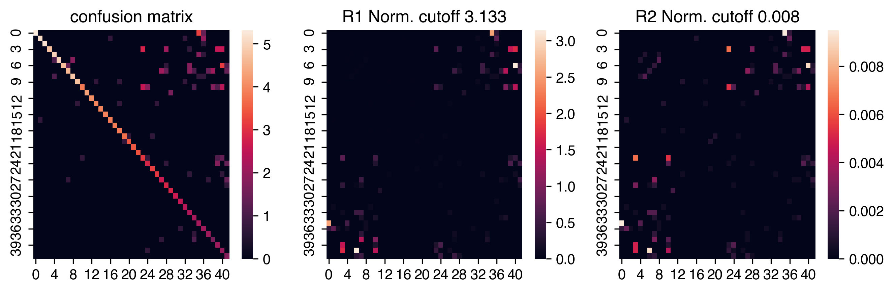
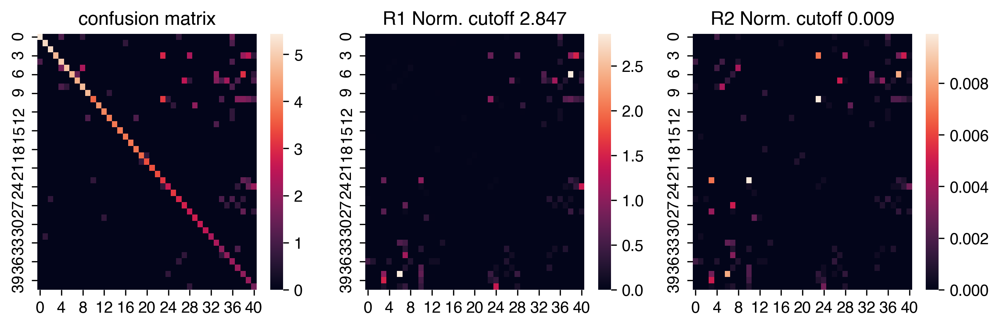
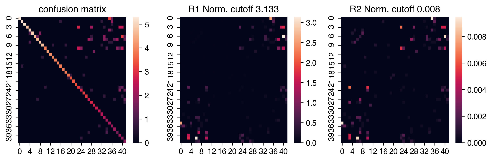
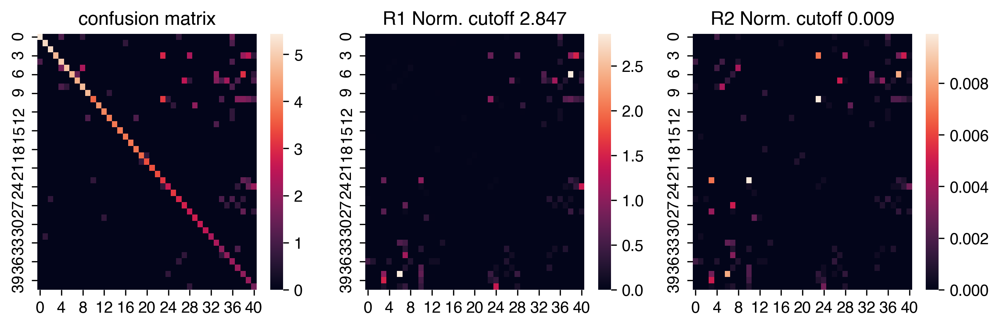


 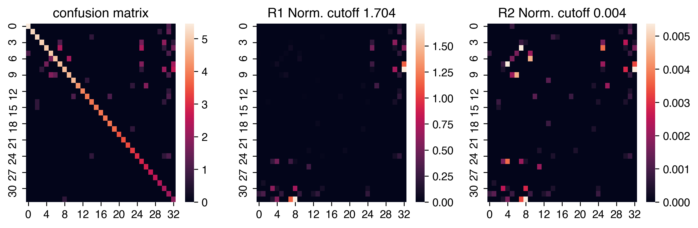
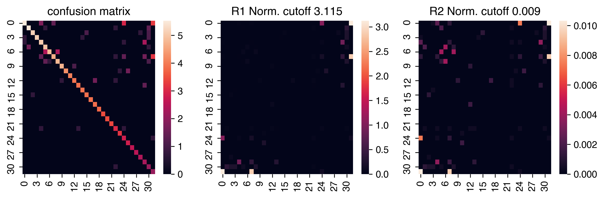
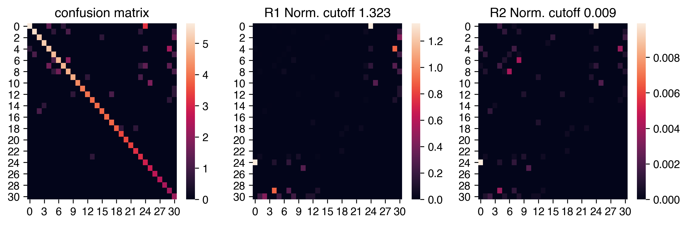
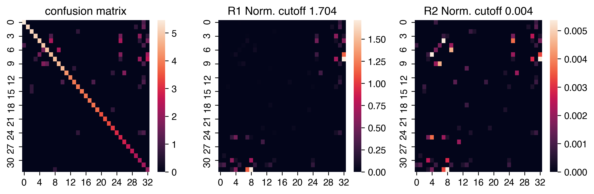
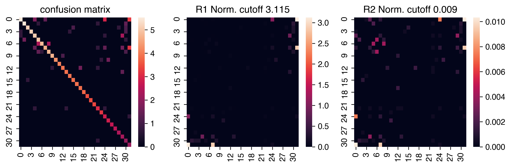
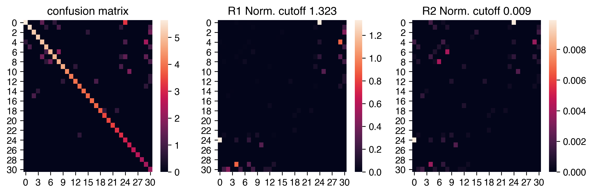

Plot¶
Cluster Lables¶
adata.obs[clustering_name] = cc.label
fig, ax = plt.subplots(figsize=(4, 4), dpi=250)
_ = categorical_scatter(data=adata.obs,
ax=ax,
hue=clustering_name,
coord_base=coord_base,
palette='tab20',
text_anno=clustering_name,
show_legend=True)
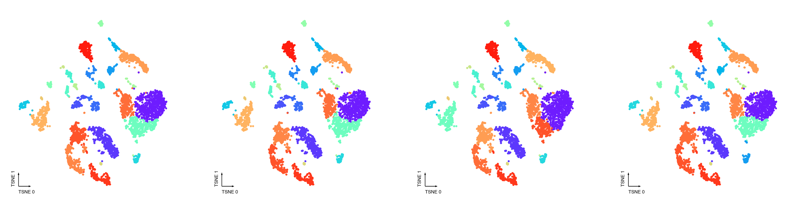
Final Prediction Probability¶
adata.obs[clustering_name + '_proba'] = cc.label_proba
fig, ax = plt.subplots(figsize=(4, 4), dpi=250)
_ = continuous_scatter(data=adata.obs,
ax=ax,
hue_norm=(0, 1),
hue=clustering_name + '_proba',
coord_base=coord_base)
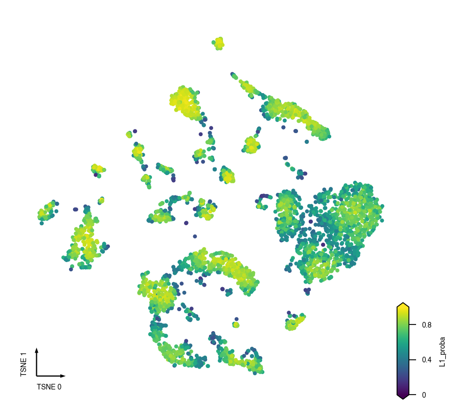
Prediction Probability Per Cluster¶
fig, ax = plt.subplots(figsize=(6, 3), dpi=300)
sns.violinplot(data=adata.obs,
x=clustering_name,
y=clustering_name + '_proba',
scale='width',
linewidth=0.5,
cut=0,
ax=ax)
ax.set(ylim=(0, 1), title='Prediction Probability Per Cluster')
ax.xaxis.set_tick_params(rotation=90)
ax.grid(linewidth=0.5, color='gray', linestyle='--')
sns.despine(ax=ax)
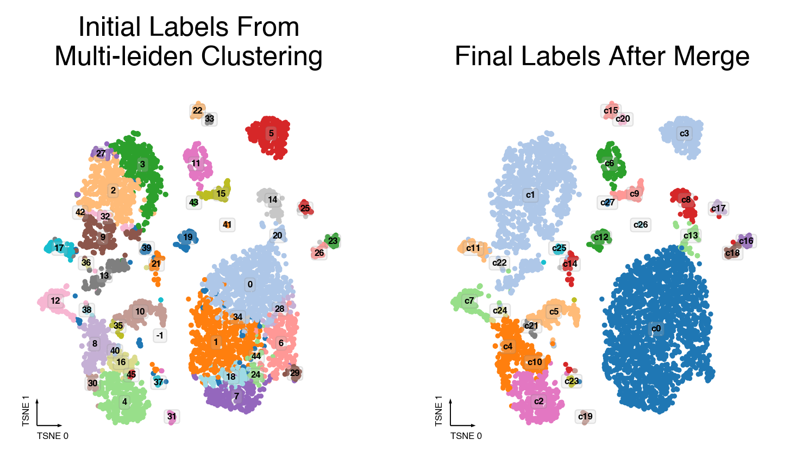
Calculate Cluster Dendrogram¶
# using the cluster centroids in PC space to calculate dendrogram
pc_matrix = adata.obsm['X_pca']
pc_center = pd.DataFrame(pc_matrix, index=adata.obs_names).groupby(
adata.obs[clustering_name]).median()
pc_center = pc_center[pc_center.index != outlier_label]
# Dendrogram take feature-by-sample dataframe as R pvclust function does.
pc_center = pc_center.T
idx_to_cluster = {i: c for i, c in enumerate(pc_center.index)}
pc_center.to_hdf('ClusterPCCenters.hdf', key='data')
pc_center.shape
(67, 30)
dendro = Dendrogram(nboot=nboot,
method_dist=method_dist,
method_hclust=method_hclust,
n_jobs=n_jobs)
dendro.fit(pc_center, plot=True)
Creating a temporary cluster...done:
socket cluster with 40 nodes on host ‘localhost’
Multiscale bootstrap... Done.

Sanity Test¶
if 'CellTypeAnno' in cell_meta:
fig, axes = plt.subplots(figsize=(8, 4), dpi=250, ncols=2)
ax = axes[0]
_ = categorical_scatter(data=adata.obs,
ax=ax,
hue=clustering_name,
coord_base=coord_base,
palette='tab20',
text_anno=clustering_name,
show_legend=False)
ax = axes[1]
adata.obs['CellTypeAnno'] = cell_meta['CellTypeAnno']
_ = categorical_scatter(data=adata.obs.dropna(subset=['CellTypeAnno']),
ax=ax,
hue='CellTypeAnno',
coord_base=coord_base,
palette='tab20',
text_anno='CellTypeAnno',
show_legend=False)
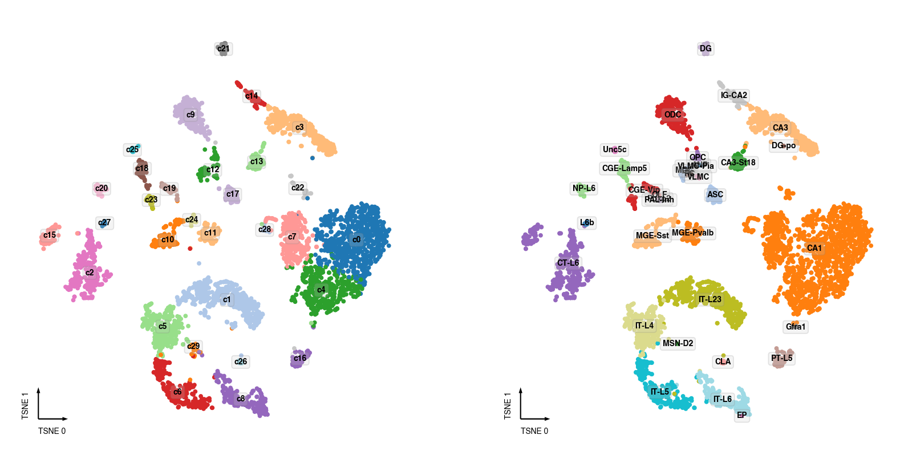
Save¶
cc.save('ConcensusClustering.model.lib')
dendro.save('Dendrogram.lib')
adata.write_h5ad(adata_path)
... storing 'L1' as categorical
... storing 'CellTypeAnno' as categorical
adata
AnnData object with n_obs × n_vars = 4958 × 2868
obs: 'leiden', 'mCHFrac', 'tsne_0', 'tsne_1', 'umap_0', 'umap_1', 'L1', 'L1_proba', 'CellTypeAnno'
var: 'chrom', 'bin_start', 'bin_end', 'CHN_mean', 'CHN_dispersion', 'CHN_cov', 'CHN_score', 'CHN_feature_select', 'CGN_mean', 'CGN_dispersion', 'CGN_cov', 'CGN_score', 'CGN_feature_select', 'leiden_enriched_features', 'mean', 'std'
uns: 'leiden', 'leiden_colors', 'leiden_feature_enrichment', 'leiden_sizes', 'neighbors', 'paga', 'umap'
obsm: 'X_pca', 'X_tsne', 'X_umap'
obsp: 'connectivities', 'distances'